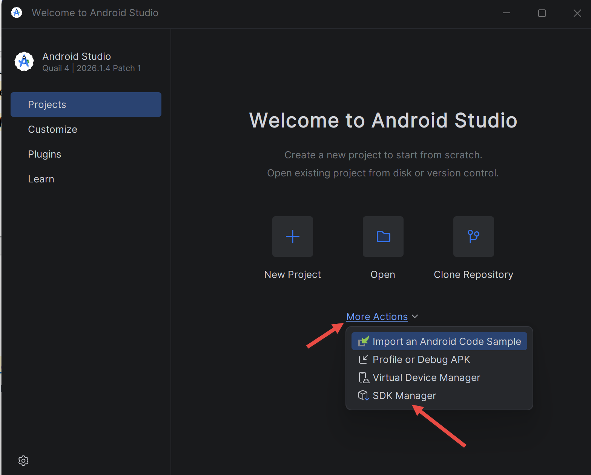
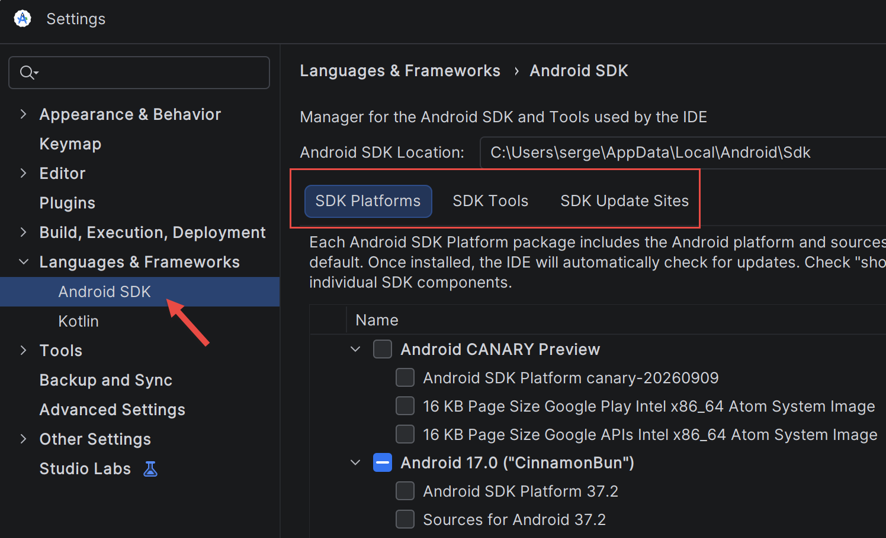

2. Mise en place de l'environnement de travail
2.1. Android Studio
[Android Studio] se télécharge gratuitement à l'adresse https://developer.android.com/studio. Au premier lancement, l'assistant propose une installation standard : l'accepter, il télécharge le SDK [Android] (les bibliothèques et les outils pour compiler une application) et l'émulateur.

Le [SDK Manager] ([Tools / SDK Manager], ou [More Actions / SDK Manager] depuis l'écran d'accueil) installe et met à jour les composants du SDK. Onglet [SDK Platforms] : une plateforme [Android] récente (API 37 pour ce cours, le paramètre [compileSdk] des projets) ; onglet [SDK Tools] : [Android SDK Build-Tools], [Android SDK Platform-Tools] (qui contient [adb]) et [Android Emulator].

[Android Studio] installe aussi son propre JDK, le [JBR] ([JetBrains Runtime], dans [C:\Program Files\Android\Android Studio\jbr]) : c'est lui qui exécute [Gradle]. Pour compiler un projet hors d'[Android Studio], en ligne de commande, il suffit de désigner ce JDK et le SDK :
- [gradlew.bat] (« Gradle wrapper ») : un petit lanceur, fourni avec chaque projet, qui télécharge au besoin la version de [Gradle] dont le projet a besoin (fichier [gradle/wrapper/gradle-wrapper.properties]) ;
- [installDebug] : compile l'application (version de mise au point, « debug ») et l'installe sur l'appareil connecté. [assembleDebug] la compile seulement, dans [app/build/outputs/apk/debug/app-debug.apk].
2.2. Préparer un émulateur Android
À défaut de téléphone, on teste l'application sur un émulateur : un téléphone virtuel qui s'exécute dans une fenêtre de l'ordinateur. Prérequis : la virtualisation doit être activée dans le BIOS et, sous [Windows], la fonctionnalité [Plateforme de l'hyperviseur Windows] cochée. On crée l'appareil virtuel dans le [Device Manager] ([Tools / Device Manager]) : [Create Device], un modèle (par exemple [Pixel 8]), une image système récente pour processeur [x86_64], [Finish].

Le bouton [Play] du [Device Manager] démarre l'émulateur. On vérifie ensuite qu'[adb] (l'outil qui relie l'ordinateur à l'appareil, dans [%LOCALAPPDATA%\Android\Sdk\platform-tools]) le voit :
Si l'appareil est indiqué [offline], attendre la fin du démarrage, ou redémarrer [adb] ([adb kill-server] puis [adb start-server]).
2.3. Préparer le téléphone Android
Pour exécuter l'application sur un vrai téléphone, celui-ci doit accepter d'être piloté depuis l'ordinateur :
- activer les options pour les développeurs : [Paramètres / À propos du téléphone], appuyer 7 fois sur [Numéro de build] ;
- activer le [Débogage USB] dans les [Options pour les développeurs] ;
- brancher le téléphone avec un câble USB qui transfère des données, et accepter, sur le téléphone, la demande d'autorisation ;
- vérifier que [adb devices] affiche le téléphone.
Dans [Android Studio], la liste déroulante des appareils, à côté du bouton [Run], propose alors l'émulateur et le téléphone.
2.4. Créer un projet
Un projet [Compose] se crée dans [Android Studio] par [File / New / New Project], modèle [Empty Activity] : un nom ([Name]), un identifiant d'application ([Package name], par exemple [fr.stahe.exemples], à l'envers comme un nom de domaine : deux applications installées sur un même téléphone doivent avoir des identifiants différents), le langage de configuration [Kotlin DSL]. L'assistant fabrique une application complète, prête à être lancée. Le projet des exemples a été créé ainsi, puis complété à la main ; ses fichiers de configuration sont présentés avec l'exemple 01.